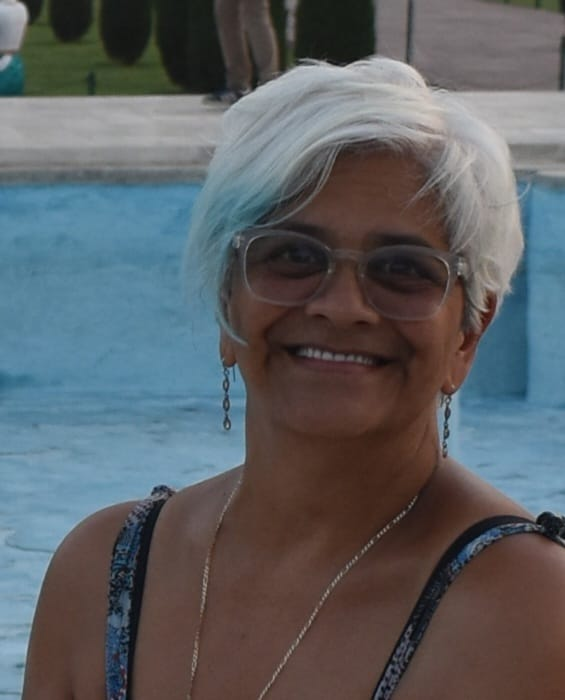
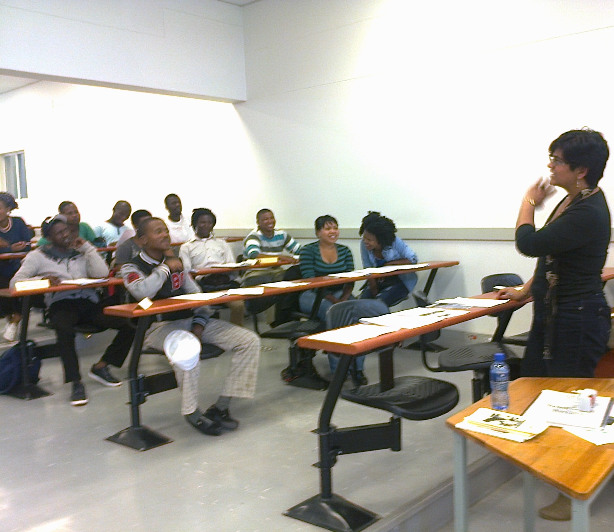

Sacred Alignment
“We are each Miraculous Works of Art in this amazing tapestry called Life. Allow me to guide you toward experiencing this Life Journey in a meaningful way, to gently hold the space as you step onto your unique path toward the unfolding of your Becoming.”

Sacred Alignment
SACRED ALIGNMENT (be it through a Reconnective Healing session, a Meditation or Conscious breathing workshop, or embarking on your unique Inner Journey) serves to gently awaken the curiosity, help ground in presence and align with purpose those on the journey toward their becoming. To know Thyself is to know God—whether you refer to that Higher Being as God, Allah, Buddha, Krishna, Yahweh, Great Spirit, Source, Ancestor — it really matters not. What matters is that you know and understand that Higher Power and recognize that you are an aspect thereof.
Biography
I am a graduate of the University of Cape Town Graduate School of Business; an experienced Reconnective Healing Practitioner (having added the skill of presenting Meditation and Conscious Breathing Workshops into the mix). Conversational or presenting the more structured Life Coaching Workshops is second nature and I resonate strongly with the work of Drs Hurtak (Academy for Future Science). However, being a student and friend of St Germain is what brings me the most joy. My 9-year Spiritual Journey with the enigmatic Comte de St Germain was recently shared with the world in my internationally published work (A Most Extraordinary Journey of Self-discovery).
I consider myself an ordinary individual, grounded in the realities of daily life. I am a mother, a colleague, a friend and a sibling - someone who laughs with abandon, sheds tears unashamedly, feels the full spectrum of emotions, and loves fiercely. I am not immune to the world's hardships and the harsh realities of corruption, inequality, and inhumanity. And yes, I often voice my frustration with a heartfelt, “What the f#ck!”
I've always had this sense that “there must be more to life” than what the status quo offers - that there is a greater truth beyond what most people settle for. My hunger for understanding has led me to seminars, books, and teachings that dive into the mysteries of the world. These steps are not just intellectual - each step is a quest to know the Self more deeply, to uncover the truth of who I really am. I believe that true freedom comes from self-awareness, and that the journey is most enlightening when guided by wisdom and clarity.
In these shifting times, I fully embrace the dawning of the Age of Aquarius - a time when the individual is called to take full responsibility for their own path. With courage, understanding, and consciousness. And so I urge others to step into their power and experience life with intention and self-awareness. For me, the human journey is not one to be left to chance; it is something to be consciously directed and lived to its fullest potential.

Guiding seekers, students, and professionals toward conscious self-mastery.
Session Logistics & Inquiries
Available weekdays after 6pm and weekends from 3pm by appointment in Lakeside, Cape Town or via distant session.
Schedule a SessionServices
Three transformative pathways to restore harmonic balance, awaken conscious awareness, and align your life journey.
Reconnective Healing
Frequency & Balance RestorationReconnective Healing is a form of energy that conveys corrective information to the body and mind. It is a form of hands-off energy work which utilizes newly re-established frequencies now available to us, and which we use to restore balance and harmony to the body, mind and spirit.
Stanford Professor Emeritus Dr. William Tiller says “When information carried through these frequencies is introduced, it creates coherence and order within the field and the body itself.”
The result: dramatic reports of regeneration instead of degeneration.
The reality of its existence has been demonstrated clearly in practice, as well as in scientific research laboratories. My youngest client was a sweet 8 year young little girl and the eldest a 79 year grand old lady.
Explore Modality →Curator of Consciousness
(Aligning your Outer Reality with your Inner World)A curator doesn't create - hence I select, arrange, and present so others can understand and experience in a meaningful way.
- I encourage reflection on wisdom from diverse traditions, experiences, and perspectives.
- I hold the space for contemplation and dialogue.
- I help you discover insights and explore the wisdom that exists within.
- I don't give you consciousness; I help you discover, recognize and encounter your own.
Be you a student, a young employee, an executive, a religious follower or a seeker of truths - I help connect your head and your heart in a way that transforms your passion for your dreams into action for your life.
Explore Coaching →Meditation and Conscious Breathing
Awakening Inner Stillness & ClarityMeditation is that sacred moment where the Consciousness comes to rest in the heartspace and connects to a Higher Aspect of the Self. Insights pertinent to the individual, a deep sense of inner peace, calm and gratitude; a deeper understanding and a clarity are but some of the benefits experienced with meditation.
The breath is the elixir of Life itself - it sustains our very being, yet we engage in this act of nurturing so unconsciously. 15min of deep, conscious breathing - practiced regularly, brings a transformation within that cascades into our outer experiences and enriches the very tapestry of our Life Journey.
During one such breathing meditation the words “Pay attention to me and I shall attend to you” was downloaded into my consciousness.
Explore Practice →A Most Extraordinary Journey of Self-Discovery
A 9-Year Spiritual Journey with the Enigmatic Comte de St Germain · By Eliza James
“Being a student and friend of St Germain is what brings me the most joy. My 9-year Spiritual Journey with the enigmatic Comte de St Germain is shared with the world in this work.”
In this deeply personal and transformative book, Eliza chronicles her extraordinary nine-year communion with the Ascended Master, the enigmatic Comte de St Germain. Spanning deep metaphysical revelations, the dawning of the Age of Aquarius, and the sacred truth of personal sovereignty, the book serves as a guiding light for anyone seeking to uncover the truth of who they really are.
- Nine years of profound guidance with the Comte de St Germain
- Transcending dogma into authentic personal sovereignty & truth
- Connecting head and heart to transform passion into intentional action
- Harmonizing with newly re-established spiritual frequencies
In Conversation: Sacred Alignment
An In-Depth Interview with Body and Mind · Frequencies, Remoteness & Inner Unfolding
“Spirit has no boundaries or borders — we touch on the essence of frequency elevation, remote healing, and holding the space for your becoming.”
In this heart-centered conversation, Eliza shares the origins of her journey—from deeply contemplating spiritual doctrines at age sixteen to her nine-year tutelage with the Ascended Master St Germain. We touch on the essence of Reconnective Healing (RH), the inner transformation that comes with elevating the frequency at which you vibrate, and what it means to hold space for your unique unfolding.
One of my most remarkable remote healing sessions had a team of Specialists at the world-renowned Groote Schuur Hospital (Cape Town, South Africa) stumped when their patient, after remotely administered RH sessions, no longer presented symptoms of an illness for which he was scheduled to go into a 6-month period of strict quarantine.
Testimonials & Resources
Healing Results
Click to view documented client healing experiences across physical, emotional, and spiritual sessions.
View Results → FeedbackCoaching Remarks
What attendees and workshop participants are saying after meditation and life coaching sessions.
Read Remarks → Published WorkA Most Extraordinary Journey of Self-discovery
Eliza's internationally published book recounting nine years of study and spiritual journey with the Comte de St Germain.
Explore Book →Do call me – let's have an informal chat over a cup of tea
I am sure you have lots of questions and you will be under no obligation to then book a session. Psssssttt – really, I don't charge "an arm and a leg" for a 30 minute session.
You are alive to give voice, action and physicality to GOD. To become the grandest version of the greatest vision you hold about Who You Are.